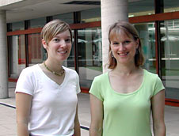
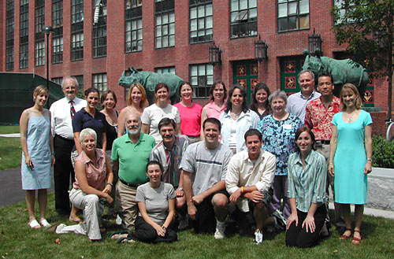

News Archives : 2005 : High School Teachers Energized by Neurobiology Summer Session
by McCaffrey Pat
August 23, 2005
“I really value the connections I’m making with my peers and the local science community.”
“It’s a great opportunity to talk science using a vocabulary higher than the 10th grade level.”
Those are just a sampling of the responses from the 18 high school biology teachers who participated in the third annual HHMI-MCB Outreach Program’s summer session, which wrapped up on July 22. The two-week program, cosponsored by MCB and the Howard Hughes Medical Institute, drew a diverse group of energetic educators who attended lectures, labs, and workshops centered on this year’s topic, neurobiology. From first-year rookies to 30-year teaching veterans, they all came to learn from MCB’s faculty and students, develop multimedia tools for classroom use, and get to know fellow instructors. When it was over, the teachers had created 19 lessons illustrating basic principles in neurobiology, all of which are available on the Outreach Program’s website. They also produced four computer animations showing neurons in action, which will be available on the website soon.
By letting the teachers create teaching materials, the summer program leverages Harvard’s traditional strength in biology to make a difference in high school science education, according to HHMI programs head Robert Lue. “We have the research and resources, and the teachers have the deep understanding of the needs of the students and their curriculum. So when we can partner with them as peers, and give them time to generate new teaching materials, then we have a true ally in the classroom. We are allowing the teachers to teach other teachers,” Lue said.
The participants, chosen from over 100 applicants, came each day from as close as Somerville and as far away as Belfast, Maine. They spanned a diversity of experience, school size, and student mixes. “Our teachers all face different challenges with their students, but what they all have in common is that they are all trying to infuse something new and interesting into their classrooms,” said Tara Bennett, the manager of the HHMI-MCB Outreach Program. “And all of the teachers are interested in trying to make better use of technology in their lessons.”
Over the two weeks, teachers were treated to lectures from MCB faculty, including Joshua Sanes, Venkatesh Murthy, Sam Kunes, Catherine Dulac, and Robert Lue, and Brad Duchaine of the Psychology Department. The presentations received high marks from this discriminating group. “I was impressed by the quality of the lectures and the researchers’ ability to get the information across. To come and hear what they are doing in their own labs was very exciting,” said Lindsey Reichheld, who teaches at Walpole High School in Walpole, Massachusetts.
| Tara Bennett (left), MCB-HHMI Outreach Program Manager, began her teaching career at Norwell High School on the south shore of Boston. She came to MCB in September 2000 after two years at Norwell, as an instructional lab technician in the Biology Teaching labs. Bennett worked in the teaching labs for two years before joining the MCB-HHMI Outreach Program. “When the Outreach coordinator position was posted, it seemed like the perfect opportunity to use my skills in secondary education and laboratory instruction,” says Bennett. “The past three years have been very exciting,” she adds, “leading the high school outreach program allows me to facilitate the sharing of Harvard’s most current research with secondary students and teachers.”
Bennett received a B.A. in Biology and Teaching Certification from Dartmouth College and a M.S. in Animals and Public Policy from Tufts University School of Veterinary Medicine. Before joining MCB, Susan Johnson (right), Curriculum Coordinator for MCB-HHMI Outreach, worked as Associate Producer for the PBS series, “Scientific American Frontiers,” and the eight-hour WGBH molecular biology series, “The Secret of Life.” She then moved into the classroom, where she taught introductory and AP biology for six years at Newton South High School. Motivated by the firm belief that cutting-edge research is essential to making classroom biology interesting and relevant to students, Johnson joined the MCB-HHMI Outreach Program. She hopes her work enables high school teachers to incorporate the excitement of scientific discovery into their curriculums, and inspire a passion for biology in students. Johnson received a B.S. from Cornell University and a M.Ed., and Massachusetts Teaching Certification from Harvard Graduate School of Education. |
|
Later, the teachers filled the microscope room to observe and photograph more C.elegans that had been engineered with green fluorescent protein to light up different parts of the worm’s nervous system. The striking images made perfect postcards to bring back to their students, one teacher remarked. Another highlight of the lab sessions occurred when the teachers got some hands-on experience with actual human brains, courtesy of graduate student Paul Ardayfio, who brought specimens from the McLean Hospital collection.
Other workshops on science writing and bioinformatics, the latter written and conducted by Rob Kulathinal and Brian Bettencourt (affiliates of the Gelbart Lab and Flybase), rounded out the schedule. The science writing session featured a lively give-and-take between MCB biology preceptor Cheryl Vaughn, who described the Harvard undergraduate science writing project, and teachers, who shared their own experiences and ideas for bringing writing instruction into the science classroom.
Between labs and lectures, the teachers were plenty busy with their own projects as well. Each participant had to produce a lesson plan using multimedia geared toward high school biology students, and they devoted time to developing topics ranging from Sleep--why do you need it? to The teenage brain: a webquest. Working in groups with professional animator Dale Muzzey, the teachers also produced four Flash animations. Starting with rough ideas, to storyboards, to final production, each group produced a three- to five-minute cartoon on a topic like action potentials, ion flows across membranes, or synapses and how they work. While the projects were challenging, the groups persevered to create something they knew would be appealing to their students. “Animations are a terrific way for kids to learn. Interactive animations allow kids to own what they’re learning,” said Robert Ceglie from the Xaverian Brothers High School in Westwood, Massachusetts. “I like that by having the visual process, you get kids away from the perception that biology is just a bunch of facts in a book.”
Since neurobiology spans so many subject areas, the teachers saw ample opportunities to incorporate their new knowledge into wide-ranging curricula. “Whether their lessons cover cell biology, behavior, genetics, or even physics, some property of neurons or nervous systems is sure to be relevant,” said Susan Johnson, the curriculum coordinator for the Outreach Program. These new lesson plans will join materials in cancer biology and immunology from previous Outreach Programs to create a growing teacher resource, freely available on the Outreach website.
As for the teachers, some will continue on to participate in the fall Outreach Program, an after-school lecture and lab series that will also focus on neurobiology. And after an intense two weeks, some were anxious do it all again, like Munson High School’s Erica Cole, who said, “I’m already talking about coming back next year.”

Summer Session Participants Front row (L-R): Lindsey Reichheld, Jerald Halpern, Kerri Scott, Dan Powers, Robert Ceglie, Ethan Blanchette, Katie Horne. Back row (L-R): Tara Bennett, Richard Fardy, Jennifer Junkins, Tammy Due, Erica Cole, Margie Clark-Kevan, Anne Perella, Nora Murphy, Sandra Holmes, Beth Mick, RoseMary McClain, Ray Broadhead, Dr. Robert Lue, Susan Johnson |